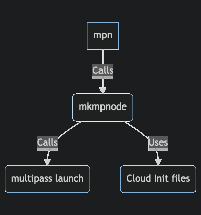

|
mptools 2.0.2
Utility to create multipass virtual nodes
|
New nodes can now be created with either mkmpnode or mpn:
mkmpnode - (Make Multipass Node). A generic utility to create a single node with arbitrary specifications and specified (or default) cloud-init files. Run mkmpnode -h for an explanation and options. mpn - (Multipass Named Nodes). A utility to create one or more nodes at the same time based on naming convention of nodes. The Node naming convention controls both the size of the node and the cloud-init specification used. The relation between the scripts are shown in Figure 1.

Figure 1: Relation between scripts and the underlying multipass
The following basic examples show how nodes can be created once the mptools package have been installed. This is just a quick review without explaining all details, the details are explained in the rest of the user guide. The purpose of these examples are just to give the reader enough to determine if this package is a good fit for purpose.
mpn ub22fl01 - Create a node based on Ubuntu 22 LTS with a full development configuration (f) in a large (l) size node.mpn ub18bs01 - Create a node based on Ubuntu 18 LTS with a basic (b) node configuration (no development environment) in a small (s) node.mpn ub20ms01 ub20ms02 - Create two nodes, both based on Ubuntu 20 LTS, minimum development configuration (m) in a small (s) node.mkmpnode -m 1GB mynode - Create a node with 1GB RAM, use the default cloud-config file and name it mynode.mkmpnode -m 2GB -d 10GB -c pg-config.yaml db-server - Create a node named db-server with Posgresql database cloud-init config with 2GB RAM and 10GB disk.
/usr/local/bin and that this path is included in the $PATH shell variable.